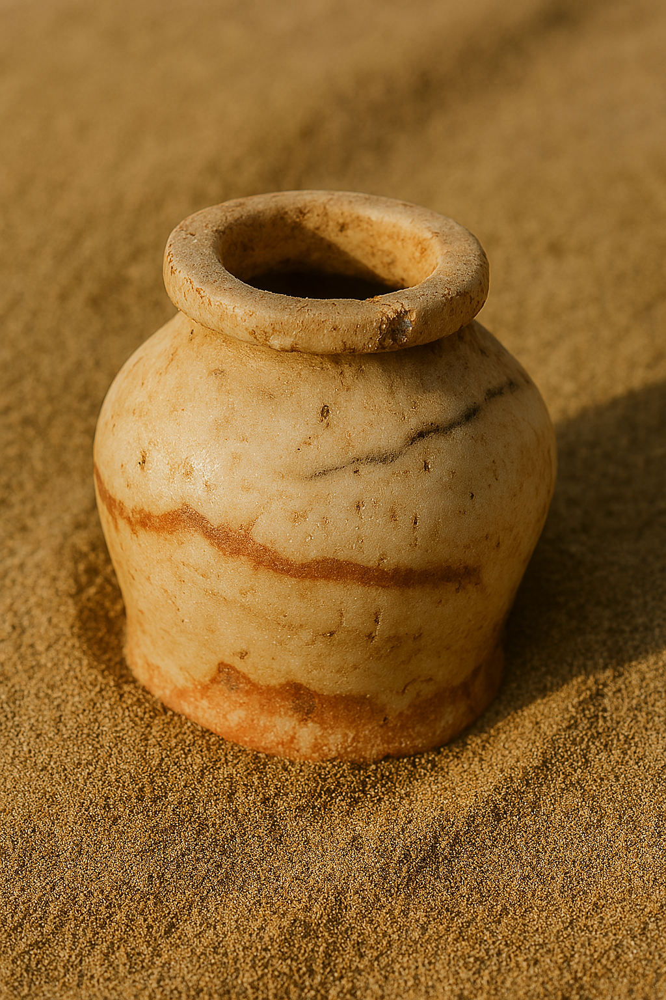
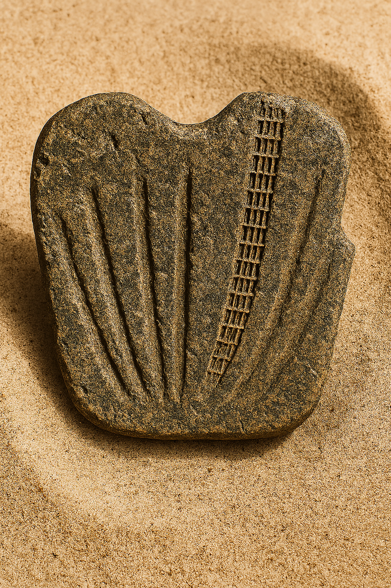

Material: Crushed limestone and sand-tempered clay mixture.
Size/Weight/Shape: Approximately 30 cm tall and 20 cm wide, slender neck, rounded midsection. Weighs roughly 5-7 kg.
Preservation State: Slight erosion, primarily intact, erosion at rim and base, faded striping likely due to burial abrasion.
Location Found: Western banks of the Nile River in Egypt, unearthed near a necropolis, a probable burial site for nobility.
Likely Purpose: Used as a ritualistic container, stored scented oils or grains. Patterning implies ceremonial, not daily use.
Evidence of Use: Both olive oil and myrrh microscopic residue was detected. Abrasions on the exterior suggest frequent handling.
Manufacture Clues: Interior oil marks denote hand-made construction.
Found With: Faience beads and linen fabric fragments.
Burial or Habitat Context: Burial location below a sandstone table in a tomb chamber.Soil strata data denote a dry season.
Symbolism: Coloring contrast, black and sand color, symbolize life and death, sun and shadow.
Comparison: Similar to Middle Kingdom vessels found in Thebes, but stylistic expressions similar to Lower Egyptian workshops. The stripe motif echo Mesa temple wall friezes.
Kohl Pot

Material: Alabaster, hand carved with metal tools, known for its durability.
Size/Weight/Shape: Approximate height 8 cm and 6 cm in diameter, weight 300 grams: rounded body, flat base, short neck.
Found With: Faience bead necklace, pottery fragments and a tattered linen pouch.
Burial or Habitat Context: Positioned beside the body, sandals aligned with ankles.
Symbolism: Sandals symbolized purification, protection and preparation to walk in the afterlife with the gods.
Comparison: More modest than gilded leather examples from royalty tombs but structurally similar to sandals from Deir el-Medina artisan burials.
Egyptian Iron Dagger
Material: Forged iron, with surface pitting and oxidation. Handle composition is gold, glass, colored stone or faience inlays.
Size/Weight/Shape: Estimated length 20-30 cm, moderate weight for handheld use, long slender, tapered tip with double-edge blade. Handle is richly decorated, cylindrical.
Preservation State: Shows wear, rust, handle is pristine, clear and detailed ornamentation.
Location Found: Not specified. Likely an Egyptian royal or military grave due to stones and craftsmanship.
Likely Purpose: Ceremonial weapon, reserved for burial assemblage.
Evidence of Use: Surface abrasion may suggest actual or symbolic use.
Manufacture Clues: High level of craftsmanship, iron is hammered or forged, joined components with precision inlay work.
Found With: Jewelry, shields, and ceremonial regalia, part of a grave grouping.
Burial or Habitat Context: Most likely a tomb setting.
Symbolism: Iron blade is linked with meteoric iron which was believed to hold celestial power. The god and glass handle symbolized status, divine protection and represented solar cults.
Comparison: Similar ceremonial weapons were discovered in Assyrian and Hittite tombs.
Ceremonial Palette Fragment

Material: Siltstone, dark green-brown, common in Naqada artifacts.
Size/Weight/Shape: Between 10 to 15 cm wide, form is flat, lightweight and portable.
Location Found: Egyptian burial site, posibly Gerzeh or Abydos in upper Egypt.
Likely Purpose: Possibly for pigment mixing during rituals, ceremonial object.
Evidence of Use: No residue from substances, shallow groove polishing, surface wear.
Manufacture Clues: Carved stone with fluted grooves and abstract patterns.
Found With: Grave items like pottery, flint tools and ivory figurines.
Burial or Habitat Context: Symbolic placement beside the noble deceased body, part of grave goods assemblage.
Symbolism: Ladder like motif may represent ascension; fluted grooves echo plant motifs or rays of light
Comparison: Similar to hunter palettes but with abstract design.
Artifact Facts
On Display Courtesy of Egyptian Antiquities Authority.
Ceremonial Vessel
Artifact ID:"Egyptian Vessel"
Title:"Egyptian Vessel"
Culture:Finely crafted vessel was unearthed on the western banks of the Nile, near the necropolis at Thebes, a sacred resting place for royal women.
Estimated Age: The Ceremonial Vessel (QV54) is dated to the New Kingdom period of Ancient Egypt, around 1186-1070 BCE, approximately 3,100 to 3,200 years old.
Material: Crushed limestone and sand-tempered clay mixture.
Origin: Excavated in Thebes (Luxor), Egypt
What Experts Believe
Recovered from a royal necropolis, the vessel likely served in purification, libation, or offering rituals. Chemical analysis revealed traces of olive oil and myrrh, both substances associated with embalming and ritual cleansing. Its decorative scheme suggests a ceremonial rather than domestic role.
Through comparative ethnographic analysis, the vessel is likely within broader patterns of world ritual practice, including many ancient cultures, from the Nile Valley to the Mediterranean, who used containers of oil and incense as bridges between the human and divine realms.
Comparative Note
Similar forms appear in Middle Kingdom burials at Thebes, though the striped motifs resemble temple friezes from Lower Egypt, indicating stylistic exchange across regions.
Cautionary Note on Interpretation
As QV54's tomb chamber was later repurposed, its original placement and exact ritual function remain uncertain, and interpretations should be approached with care.
Catalog ID: QV54, Location: Valley of the Queens, Tomb QV54, Thebes (Luxor), Upper Egypt
Artifact Facts
On Display Courtesy of The Penn Museum.
Egyptian Kohl Pot
Artifact ID:"Egyptian Kohl Pot"
Title:"Egyptian Kohl Pot"
Culture:Ancient Egypt (New Kingdom to early Third Intermediate Period).
Estimated Age:3,200 Years BP Saqqara Necropolis
Material: Alabaster, hand carved with metal tools.
Origin: Saqqara, Egypt, Saqqara necropolis (specifically recorded as Abydos, Locus E108
What Experts Believe
The Egyptian kohl pot AB-E_108 may have functioned both as a practical cosmetic container and as a symbolic funerary object. In daily life, kohl had multiple purposes: it was applied as eyeliner, which reduced sun glare and may have had antimicrobial properties, and it was also regarded as a protective substance, warding off the "evil eye." Within the funerary context, the inclusion of such a vessel may have symbolized continuity of beauty, status, and protection in the afterlife.
The association with other cosmetic tools in the tomb strengthens the interpretation that cosmetics played a role in identity construction and ritual safeguarding. The fact that the pot was discovered in a noblewoman's burial further supports the idea that cosmetics may have been linked to elite status and expressions of femininity, though caution must be applied in directly linking object type with gender identity.
Comparative Note
Comparisons with similar kohl pots from Theban contexts suggest regional variations in recipe, with this Saqqara example containing higher lead content. Such distinctions point to local traditions in cosmetic preparation while reinforcing the shared cultural grammar that linked kohl to well-being, power, and social prestige across Egypt.
Cautionary Note on Interpretation
The kohl pot is more than a container; it is a semiotic artifact encoding how ancient Egyptians linked material objects, bodily practice, and spiritual safeguarding. In its carved walls, we glimpse a culture where cosmetics spoke the language of protection, beauty, and eternal identity.
The Egyptian Kohl Pot, Catalog ID: E9205, Provenience: Abydos, Locus E108, is on display at the Penn Museum
Artifact Facts
On Display Courtesy of: The Metropolitan Museum of Art (The Met).
Bronze Applicator Stick
Artifact ID:"Bronze Applicator Stick"
Title:"Bronze Applicator Stick"
Culture:Cultural ideas of protection, identity, and continuity in the afterlife.
Estimated Age:3,200 Years BP Saqqara Necropolis
Material:Alabaster, hand carved with metal tools.
Origin:Saqqara, Egypt, noblewoman's burial site.
What Experts Believe
This slender bronze applicator, roughly 3,100 - 3,300 years old, unearthed in Tomb QV54 on the western bank of the Nile. Crafted from copper alloy and showing surface patina with wear at the tip, it was likely used to apply kohl or oils in both daily and ritual settings. Its
Comparative Note
Comparable examples appear in New Kingdom tombs at Deir el-Medina and the Valley of the Kings. Parallels in the British Museum (EA 25712) and the Metropolitan Museum of Art (26.7.1342) show nearly identical forms, reinforcing its role as a standard tool in both daily life and funerary practice.
Cautionary Note on Interpretation
Viewed through cultural semiotics, this object embodies layers of meaning beyond its practical use. The act of applying kohl was itself a symbolic practice: protection against illness, affirmation of status, and an expression of cultural ideals of beauty.
QV54-BR-A1; Excavated from QV54, Valley of the Queens, Thebes (Luxor, Upper Egypt), burial chamber of Prince Khaemwaset, son of Ramesses III. Now in the collection of The Metropolitan Museum of Art, New York.is on display at the The Metropolitan Museum of Art (The Met).
Ceremonial Vessel
3,800 Years BP Western Nile Necropolis Sand-Tempered Clay.
Function (Hypothesized): Ritual container for oils.
Location Found: Burial chamber beneath sandstone table, Nile west bank.
This black and gold jug is believed to have served a ceremonial function, likely used in funerary or ritual contexts. Unearthed near a necropolis associated with elite burials, its preserved form and symbolic striping suggest it was not intended for daily use but for sacred rites.
The vessel's slender neck and rounded midsection reflect hand crafted design, with interior oil marks confirming artisanal manufacture. Microscopic residue of olive oil and myrrh, along with exterior abrasions, indicate repeated ritual handling. Faded horizontal striping, once vivid, likely eroded due to burial abrasion over centuries.
Associated finds include faience beads and linen fragments, reinforcing its ceremonial role. The vessel's color contrast, black and sand, symbolizes life and death, sun and shadow, echoing dualistic themes in Egyptian cosmology. Though similar in form to Middle Kingdom vessels from Thebes, its stylistic details align more closely with Lower Egyptian workshops. The stripe motif parallels friezes found on Mesa temple walls, suggesting a shared symbolic grammar across regions.
Kohl Pot
ca. 3,200 years BP (New Kingdom, Late Bronze Age)
Material: Alabaster
Function (Hypothesized): Cosmetic container for kohl application.
Location Found: Discovered near Saqqara necropolis, burial context..
Associated items, cosmetic tools including a shell palette, bronze applicator sticks, and fragments of reed brushes The pot's craftsmanship and burial context denote high status and symbolic value; kohl was believed to offer magical protection.
Comparisons with similar kohl pots from Theban contexts suggest regional variations in recipe, with this Saqqara example containing higher lead content. Such distinctions point to local traditions in cosmetic preparation while reinforcing the shared cultural grammar that linked kohl to well-being, power, and social prestige across Egypt.
Bronze Applicator Stick
This slender bronze applicator, roughly 3,100 - 3,300 years old.
Material: Made from bronze, a copper alloy, cosmetic tool in New Kingdom Egypt.
Function (Hypothesized): It was likely used to apply kohl or oils in both daily and ritual settings.
Location Found: Unearthed in Tomb QV54 on the western bank of the Nile
Paleographic and symbolic analysis show how cosmetic implements communicated values of refinement and sacred order, while comparative study links it to similar objects across Egypt and the wider Mediterranean.
This artifact helps modern visitors glimpse how material culture embodied both personal care and spiritual belief.
Palm Leaf Sandals
Theban Necropolis, New Kingdom, c. 1200 BCE
Material: Crafted from palm fiber and braided halfa grass.
Function (Hypothesized): Sandals represented purification, protection, and readiness to journey with the gods in the afterlife.
Location Found: Discovered in a shaft tomb near the Theban Necropolis, sealed inside a wooden box.
These palm fiber sandals show clear signs of everyday wear yet were carefully placed beside the body as part of the burial assemblage. In Egyptian belief, such footwear symbolized purification and readiness for the afterlife, ensuring the deceased could "walk with the gods."
Comparisons show these sandals are simpler than gilded leather royal examples, yet closely resemble those from artisan burials at Deir el-Medina. Their survival highlights the balance between practical use and ritual provision in New Kingdom funerary practice.
Egyptian Iron Dagger
Material: Forged from iron with gold and stone inlays, this dagger reflects the exceptional craftsmanship of elite workshops.
Function (Hypothesized): Abrasion on the blade suggests either ritual use or symbolic activation before burial. Comparisons with ceremonial daggers from Assyrian and Hittite contexts reveal broader Near Eastern traditions of weapons serving as instruments of identity, divine favor, and eternal guardianship.
Location Found: Likely placed in a tomb context, the dagger functioned less as a weapon of war than as a symbolic object of power and protection.
Most plausible discovery location is an excavated location from a royal or high-status tomb in Egypt, likely in the Valley of the Kings or Queens (Thebes/Luxor region).
Comparisons with ceremonial daggers from Assyrian and Hittite contexts reveal broader Near Eastern traditions of weapons serving as instruments of identity, divine favor, and eternal guardianship.
Ceremonial Palette Fragment
22,000 Years BP Dorsai Scarp Ridge Composite Stone
Material: Siltstone, dark green-brown, common in Naqada artifacts.
Function (Hypothesized): Possibly for pigment mixing during rituals, ceremonial object.
Location Found: Egyptian burial site, posibly Gerzeh or Abydos in upper Egypt.
This fragment of a ceremonial palette reflects the symbolic transition of utilitarian objects into ritual meaning. Its abstract motifs, possibly evoking ascension or divine light, suggest it functioned less as a tool and more as a medium of spiritual and cultural expression in early Egyptian funerary practice.
Carved withed pigment points to ritual activity and intentional deposition. While it shares geometric similarities with the later standing stones at Aetha-Zul, this fragment displays a distinct symbolic grammar and a more advanced material blend, indicating a unique, localized cultural expression.